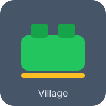

Andhra Pradesh: Culture, Coastline, and Connected Villages
Andhra Pradesh blends vibrant coastline tourism, historic temples, and a fast-growing rural economy. With 13 districts and thousands of villages, the state empowers local bodies to deliver services, infrastructure, and welfare programs effectively.
13
Districts
679
Mandals
17K+
Villages

State Map
Key regions connected through rural development missions.
Governance Hierarchy
Visual overview from the state administration to grassroots ward committees.

Sarpanch Login
Select your location, verify your mobile number, and access village insights.
Village Dashboard
Login to view details. Data is fetched dynamically from the village API dataset.
Admin Login
Secure access to monitor sarpanch leadership information.
Sarpanch Directory
Logged-in admins can view the latest sarpanch assignments and focus areas.